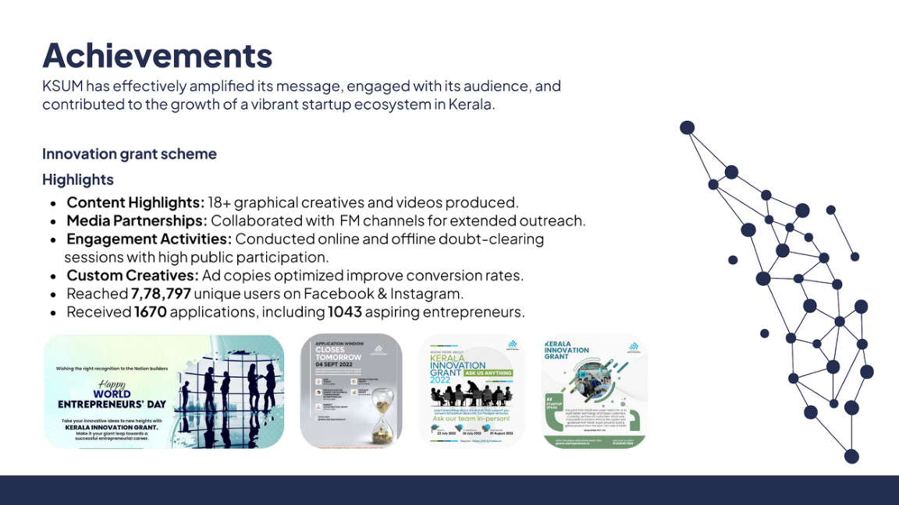
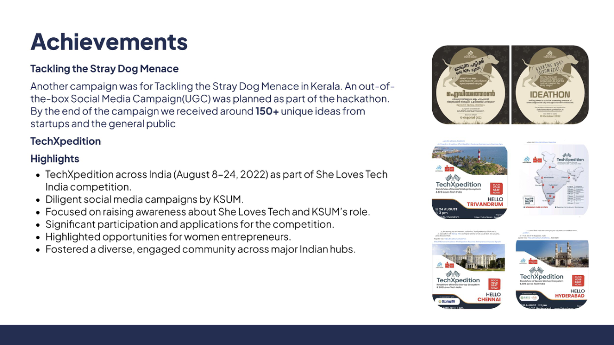
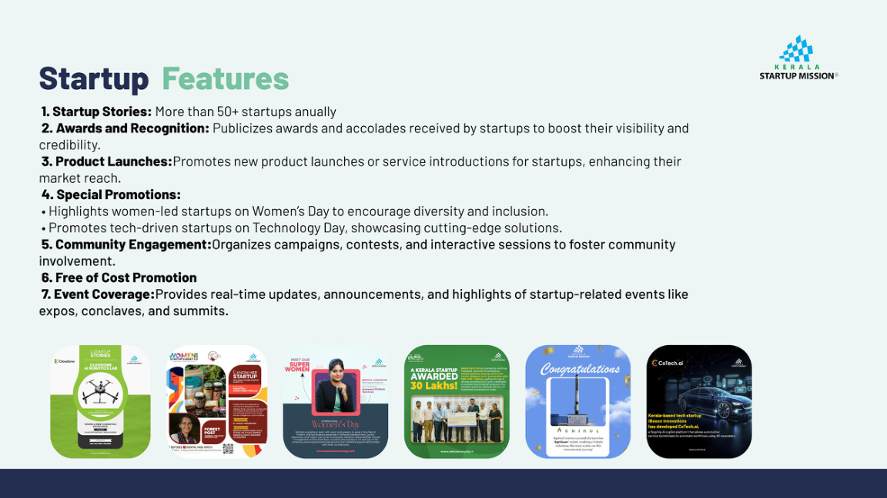

Kerala Startup Mission
Initiatives that connect.
Social media and PR supporting startup opportunities, founder visibility, and public engagement. Selected work from the KSUM channels managed as part of my role.

Documented campaign results
Outreach in action.
Historical figures from the innovation grant campaign in the e-Governance award presentation, rather than current channel totals.
Official KSUM social archive
Featured posts.
Selected for their campaign relevance and storytelling. Public data does not provide a complete engagement ranking.
A founder's perspective
A testimonial from JPNME founder Pinky Jayaprakash connects the Productisation Grant for Women with a founder's experience and an application invitation.
View KSUM's grant postConnecting capital
A speaker-led invitation to Sanjay Mehta's angel investment masterclass, making the session's value clear to prospective participants.
View KSUM's Seeding Kerala postIdeas meet real users
MVP Studio invites women-led startups to test products and gather customer feedback, turning a programme announcement into a practical opportunity.
View KSUM's MVP Studio postPolicy made accessible
Budget announcements presented through their relevance to Kerala's startup ecosystem and the wider entrepreneurship community.
View KSUM's budget postFrom the presentation
More than announcements.

Participation & outreach
TechXpedition supported the She Loves Tech India competition in August 2022. A separate civic ideathon campaign invited public ideas on the stray-dog challenge, recording around 150+ submissions in the presentation.
View the original slide
Founder visibility
Startup stories, awards, product launches, and event coverage brought founders into the spotlight. The presentation records more than 50 startup stories annually, alongside Women's Day and Technology Day promotions.
View the original slideChannels